Aryan
Rai
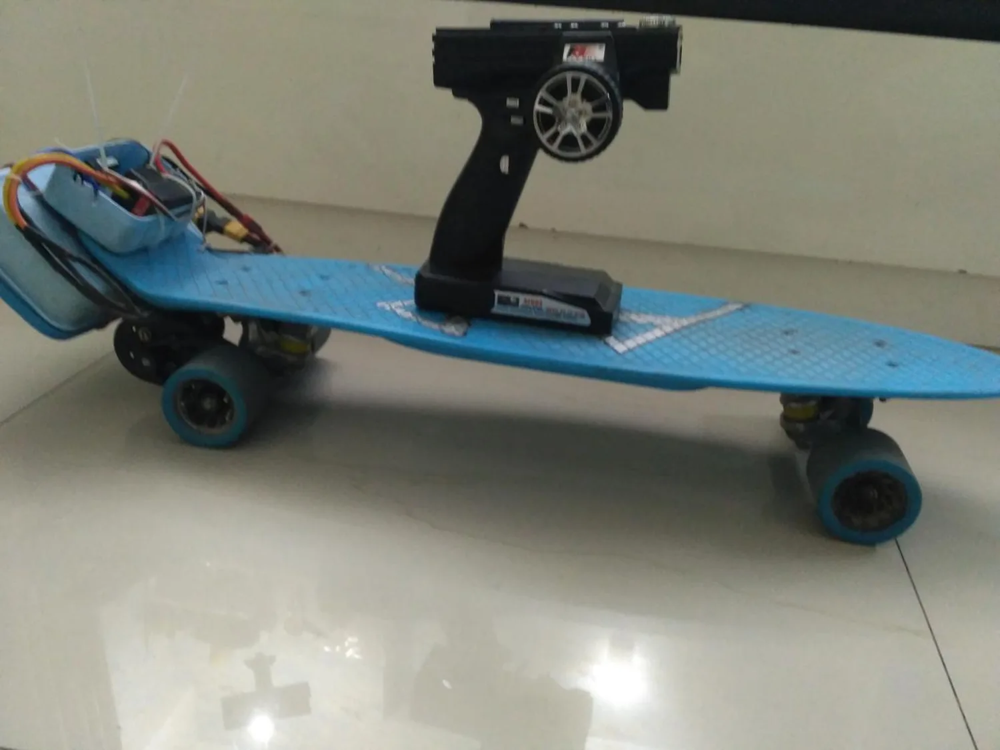
01 / THE FIRST EXPERIMENTS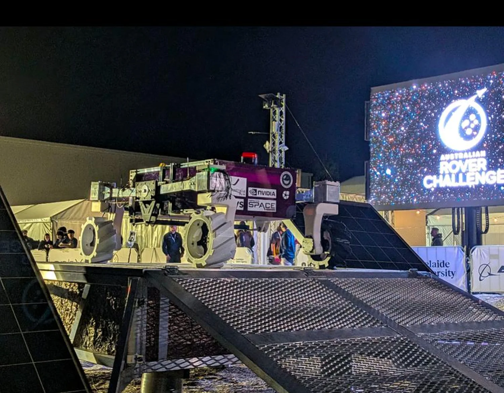
02 / BUILDING TOGETHER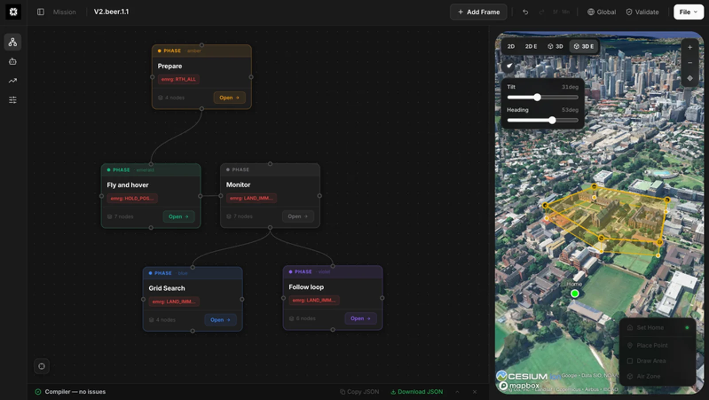
03 / WHAT COMES NEXTThe work,
all of it.
01 / EVERYTHING I'VE BUILT
Every project. Most recent first.
Current


2026

2025


2024


2023


Earlier


The work,
in detail.
02 / THE WORKBENCH
Open a project to see the build.
26 projects
Orbit / PerceptionMission design to live fleet operations.Robotics
Current work
Mission design to live fleet operations.
As co-founder at Perception, I work across hardware, robotics and embedded systems. Orbit brings mission planning, operator-supervised execution, telemetry and video into one workspace. Raven is our reference drone prototype; Orion is our mesh communications work in development.
ROS 2 · ArduPilot · MAVLink · GStreamer · KiCad
Visit PerceptionImitation MachinesHelping robots learn from human demonstration.Robotics
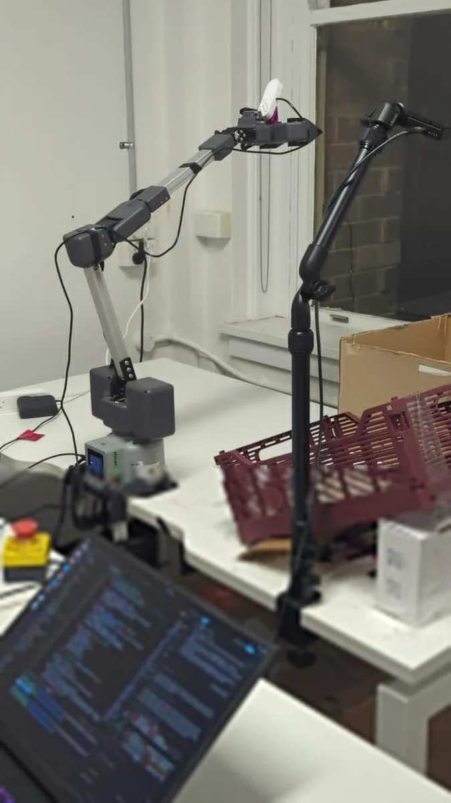
Mar 2026 - present
Helping robots learn from human demonstration.
My robotics systems engineering internship spans physical robot integration, simulation, motion planning and teleoperation. I work with the UR10e, Inspire RH56 hand and Elephant Robotics M750, alongside demonstration-data workflows and ACT, Diffusion Policy and VLA models.
ROS 2 · Isaac Sim · MuJoCo · PyTorch · LeRobot
Sydney Interplanetary Rover InitiativeA planetary rover, built together.Embedded
Mar 2024 - Mar 2026
A planetary rover, built together.
As Electrical Co-Lead, I led a 17-engineer electrical, embedded and controls team through the Australian Rover Challenge 2026. My work covered power distribution, PCB design, Teensy firmware, CAN motor control and integration of compute, sensing and radios. Rover hardware and photographs represent the collective work of the SIRI team.
KiCad · Teensy · C++ · CAN · Jetson
ANT61 / BeaconEmbedded software for space robotics.Embedded
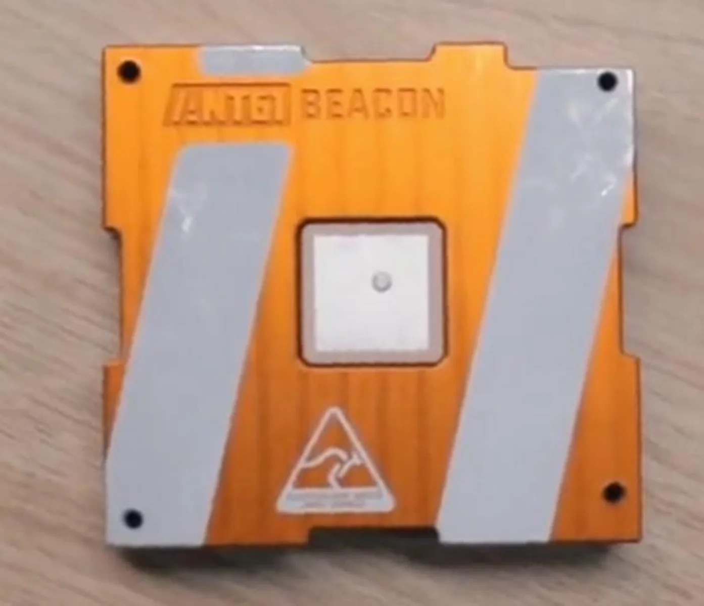
Jun - Jul 2025
Embedded software for space robotics.
During my embedded systems internship at ANT61, I worked on Beacon RevG firmware: GNSS acquisition, UART DMA and interrupt-driven data handling, and CubeSat Space Protocol communications. My focus was making data move reliably between satellite hardware and its companion device.
STM32 · C++ · GNSS · libcsp · KISS · CRC32
About BeaconSatMapFinding the next connection in orbit.Software
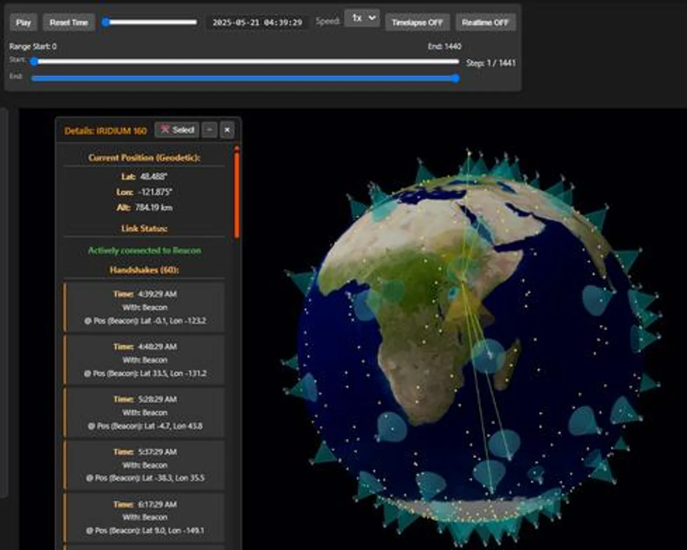
May 2025
Finding the next connection in orbit.
A satellite communications simulation for an ANT61 Beacon-equipped satellite and the Iridium constellation, with 2D and 3D visualisation. Our team won first place at the USRC x ANT61 Space Handshakes Hackathon. I led the technical stack, from the interface and simulation logic to system integration.
TypeScript · WebGL · Orbital simulation
Explore the codeHowYouSeeMeGiving robots a persistent view of the world.Robotics
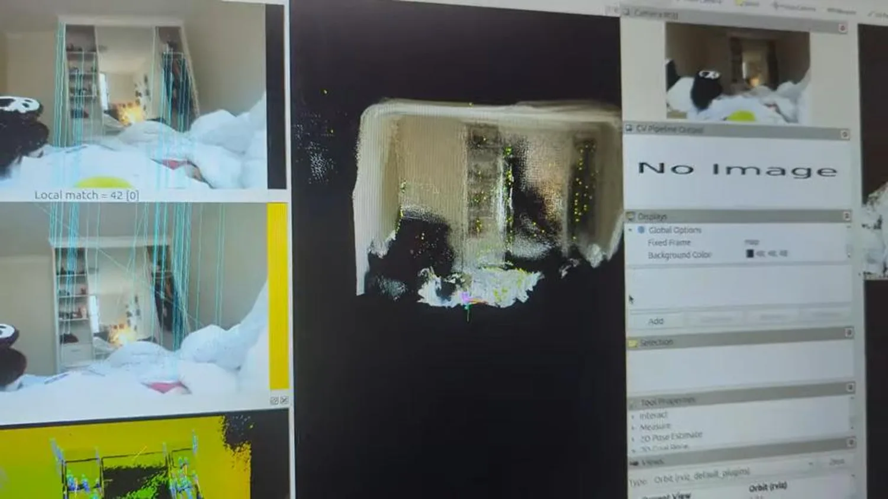
Ongoing
Giving robots a persistent view of the world.
A ROS 2 perception system combining RGB-D geometry, detection, segmentation and face identity into a persistent semantic world state. It connects Kinect v2, ORB-SLAM3, YOLO11, SAM2/FastSAM, InsightFace and TSDF, with Rerun visualisation and an MCP interface.
ROS 2 · RGB-D · SLAM · Python · Rerun
Explore the codeDroidCoreA modular platform for my robotics experiments.Robotics
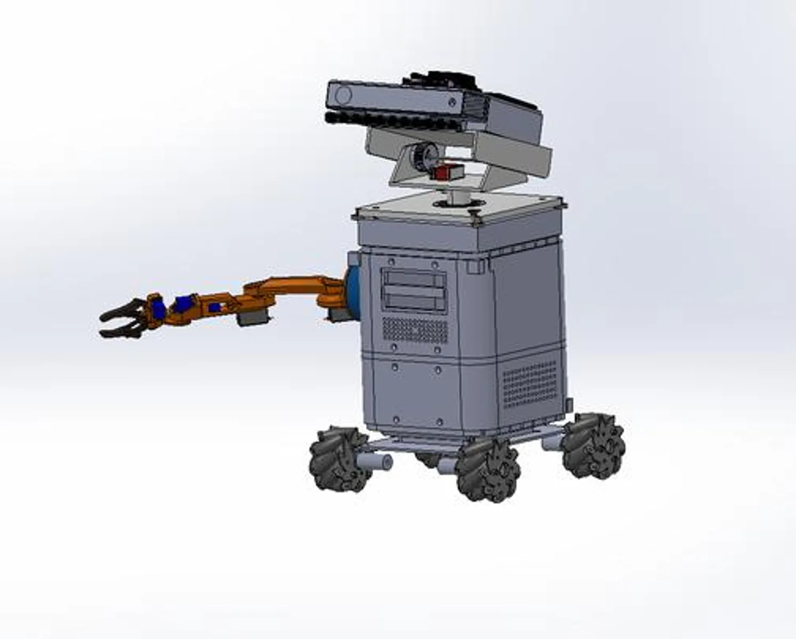
Ongoing
A modular platform for my robotics experiments.
A custom robotics platform that brings together mechanical design, electronics and software. The work explores modular mobile robotics, sensor fusion, SLAM and vision. Individual components and integration experiments are part of an ongoing build.
Python · Robotics · CAD · Sensor integration
Explore the codeRocketry datalogger & test systemsFrom sensor readings to flight and test data.Embedded
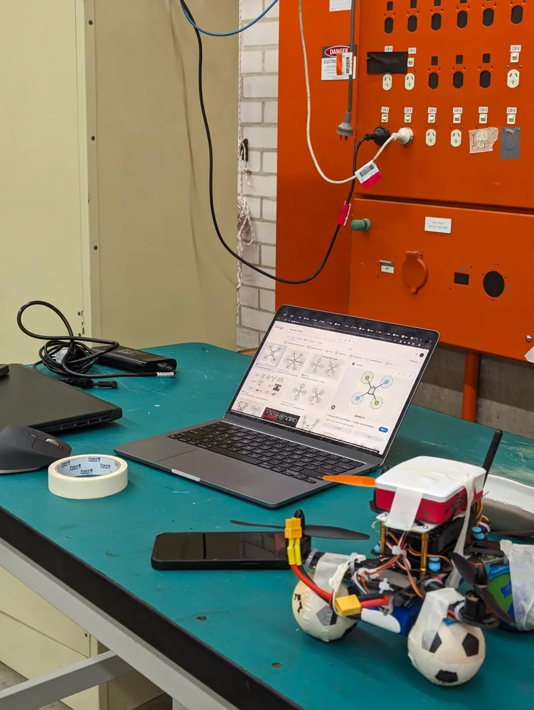
Feb 2024 - Jan 2025
From sensor readings to flight and test data.
At USYD Rocketry I designed schematics and firmware for an in-house STM32 datalogger, with pressure and temperature acquisition, storage and telemetry. I also built LabJack-based tank-test instrumentation and supporting software as part of the team.
STM32 · RS485 · LoRa · LabJack · DAQ
Sydney UAV / Project FASTRAutonomy has to work outside the simulator.Robotics
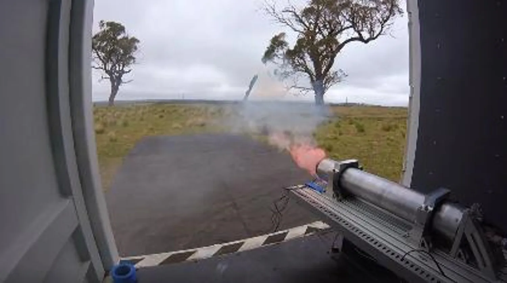
Feb - Sep 2024
Autonomy has to work outside the simulator.
I built and calibrated a PX4/Pixhawk quadrotor with Raspberry Pi, ROS 2 and OpenCV, contributed to onboard navigation work and served as primary pilot for field testing with the Sydney UAV team.
PX4 · Pixhawk · ROS 2 · OpenCV
BlueLilyA configurable sensing and control platform.Embedded
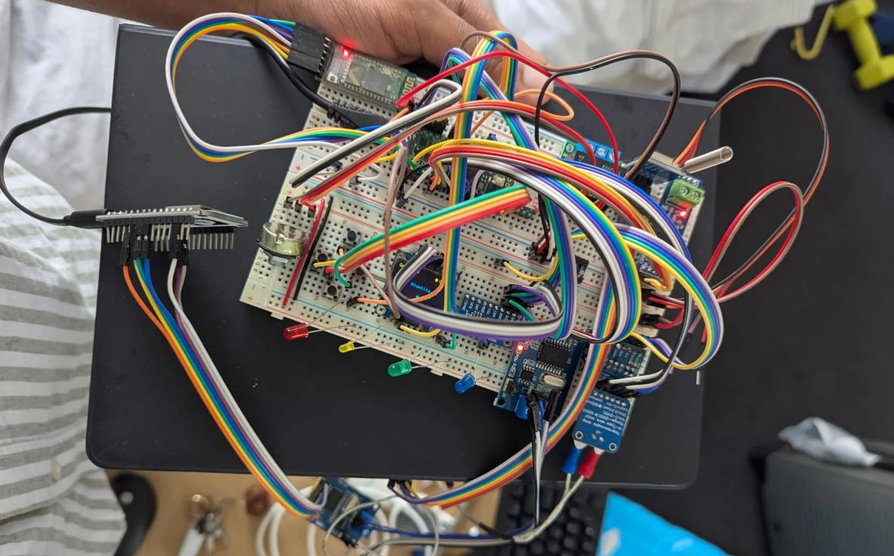
Personal project
A configurable sensing and control platform.
A platform for real-time sensing, control and communications across robotics, rocketry, payloads and CubeSats. The prototype brings sensor interfaces and communication buses together with configurable logic.
C++ · RS485 · LoRa · CAN
Explore the codeCommsA ground station that adapts to the hardware.Software
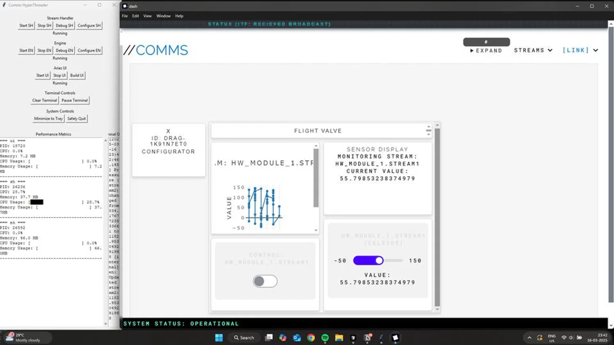
Personal project
A ground station that adapts to the hardware.
A modular communications dashboard for ground control, data acquisition and hardware interfaces. Custom backend and frontend modules support different devices and monitoring workflows.
DAQ · Ground control · Modular interfaces
Explore the codeCanSat / TU BerlinA satellite engineering exercise in a can.Embedded
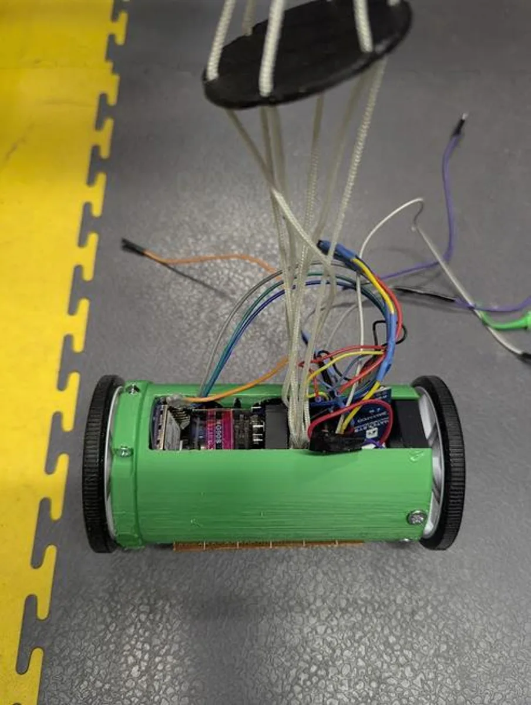
Jan 2026
A satellite engineering exercise in a can.
Hands-on satellite design at the Technische Universitat Berlin Winter School, combining compact hardware, sensing and embedded engineering in a CanSat build.
CanSat · Embedded systems · Integration
RGBeatzTurning music into light.Embedded
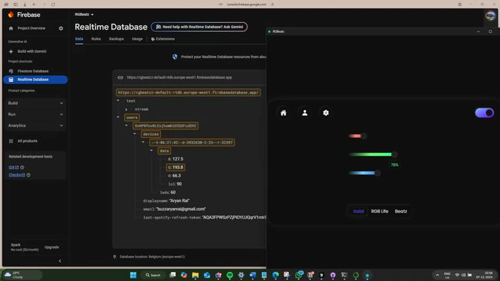
Personal project
Turning music into light.
Addressable RGB lighting with an ESP8266 and desktop interface. The project uses Spotify track analysis to drive lighting without a microphone, connecting software, wireless communication and physical output.
ESP8266 · Python · Spotify · Firebase
SmartLightsHome automation, room by room.Embedded
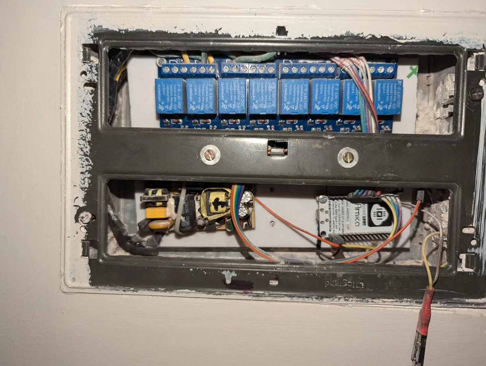
Personal project
Home automation, room by room.
A Wi-Fi lighting system built with microcontrollers, relays, touch sensors and a web interface. An everyday use for the electronics and software I was learning.
ESP32 / ESP8266 · IoT · Web UI
DoorUnlockA small device with an everyday job.Embedded
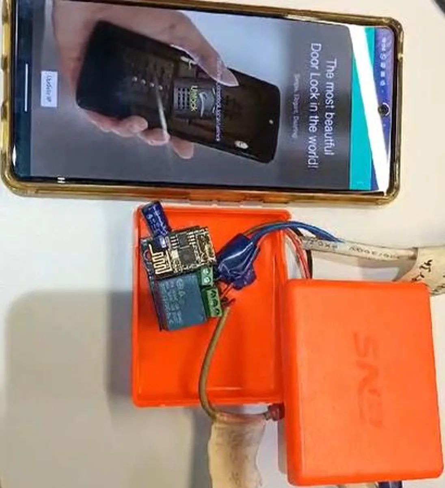
Personal project
A small device with an everyday job.
An ESP8266-based door access project with a locally hosted web interface. It grew from experimenting with microcontrollers and home automation into a system used at home.
ESP8266 · Local web server · Electronics
CarCanCantListening to a vehicle through CAN.Embedded
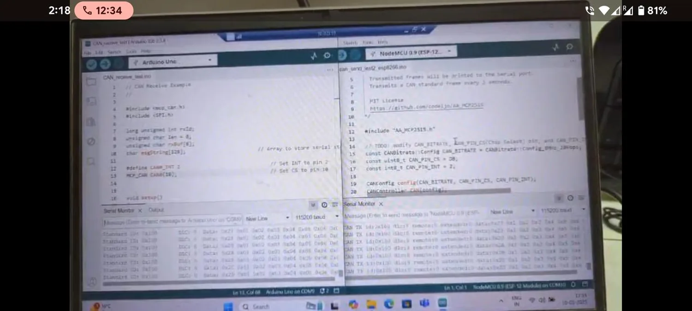
Personal project
Listening to a vehicle through CAN.
An embedded hardware and software toolkit for automotive CAN logging and diagnostics, with code and PCB design work.
CAN · KiCad · Diagnostics
LTE battery monitorKeeping an eye on a battery from afar.Embedded
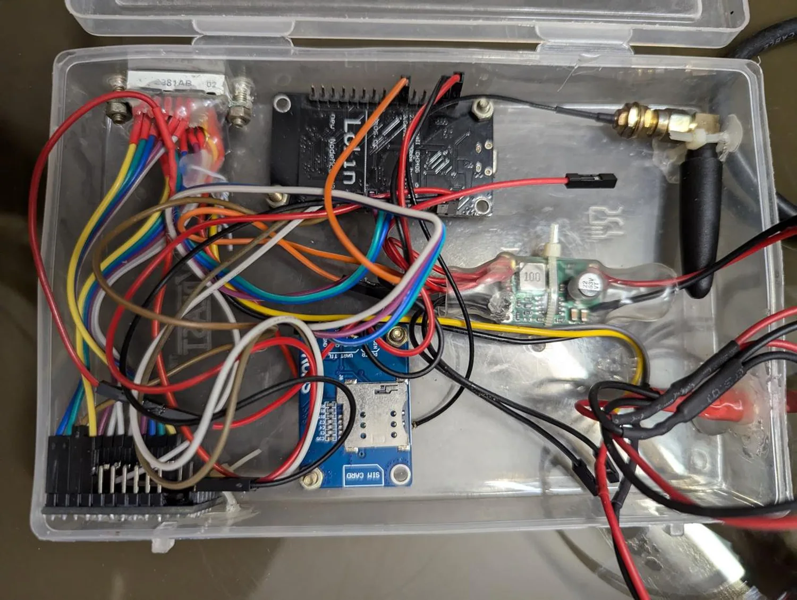
Personal project
Keeping an eye on a battery from afar.
A remote battery-monitoring build using LTE connectivity, bringing together sensing, communications and a physical electronics enclosure.
LTE · Battery sensing · Telemetry
Treasure hunt & interactive electronicsLearning by making the whole system work.Embedded
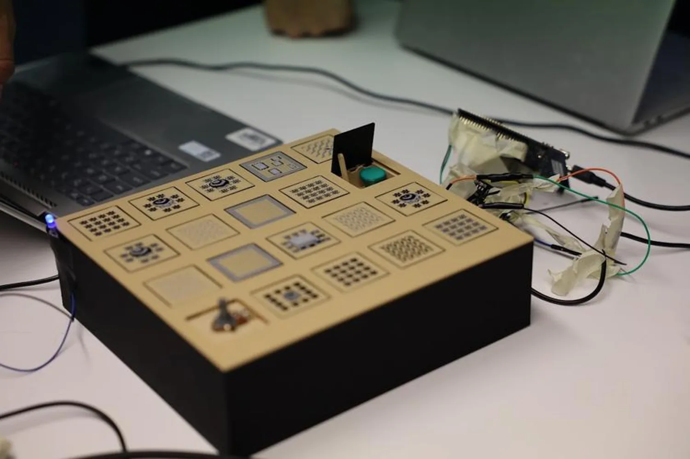
University projects
Learning by making the whole system work.
MTRX2700 work included a microcontroller treasure hunt and a magnet-detector interactive game. These projects combined embedded programming, physical interfaces and team integration.
Microcontrollers · Sensors · C · Teamwork
Autonomous warehouse roboticsMapping, inspection and delivery on TurtleBot.Robotics
2025
Mapping, inspection and delivery on TurtleBot.
MTRX3760 project work integrating ROS 2 navigation, LiDAR and camera sensing, SLAM and autonomous task execution in Gazebo and RViz.
ROS 2 · SLAM · Gazebo · RViz
SimplyWisePractical software for local businesses.Software
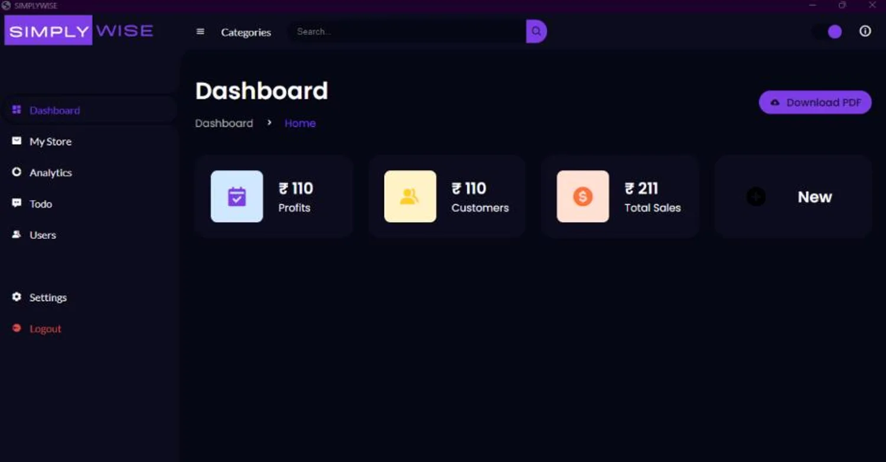
Personal project
Practical software for local businesses.
An inventory-management prototype built with Python, JavaScript and Eel, exploring lightweight business workflows and desktop interfaces.
Python · JavaScript · Eel
Academic testing softwareAn online space for IELTS practice.Software
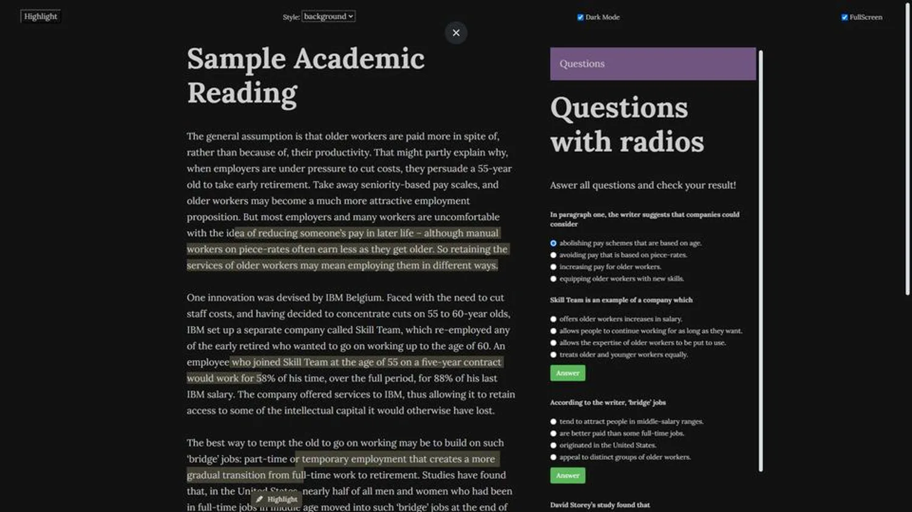
Personal project
An online space for IELTS practice.
A web-based testing project with reading and writing exercises and assessment workflows, deployed using Firebase.
Web development · Firebase
Unity multiplayerA detour into games and shared worlds.Software
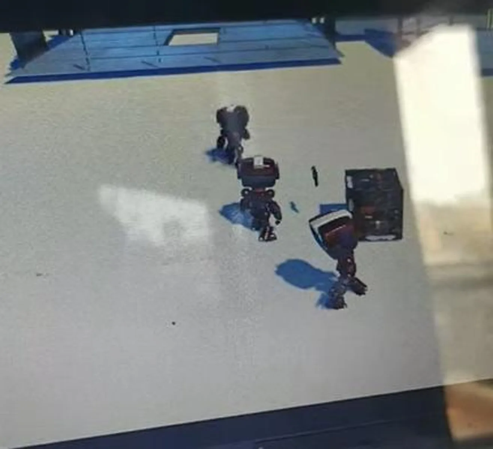
Personal project
A detour into games and shared worlds.
A multiplayer PvP demo built with Unity and Firebase Realtime Database, exploring connected gameplay and day-night cycles.
Unity · C# · Firebase
Drones, RC cars & electric boardsThe projects that started everything.Hardware
Early experiments
The projects that started everything.
Building with my father helped turn an interest in electronics into a habit. I assembled hobby quadcopters and RC cars, built an electric skateboard that later became a bike project, and experimented with small Arduino robots and servos.
Motors · ESCs · Batteries · Arduino · Making
Interactive light sequencerPatterns, inputs and real hardware.Embedded
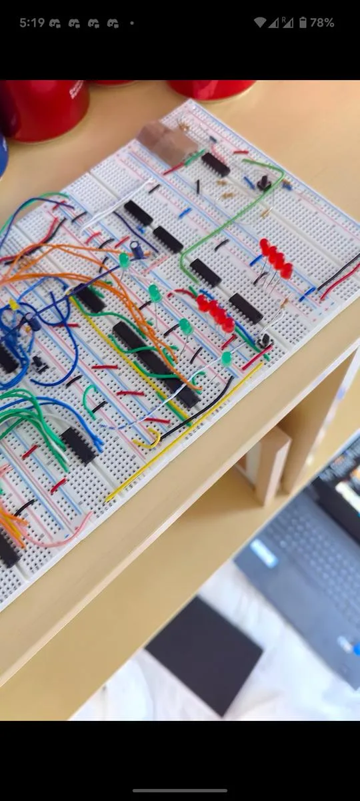
University project
Patterns, inputs and real hardware.
An MTRX1705 light-pattern sequencer, alongside early coursework in C-based air-traffic-control and PCB-quality-control systems.
C · Digital electronics · Microcontrollers
StarSim & software experimentsFollowing an idea into code.Software
Personal projects
Following an idea into code.
StarSim explores a C++ physics library for embedded and robotics applications. Other experiments include ShipMap for shipment tracking, HowDollarWorks for historical currency analysis, and chyappy for lightweight serial sensor communication.
C++ · Python · Physics · Data
AllyAnother branch of the things I build.Software
Current work
Another branch of the things I build.
Alongside robotics and embedded systems, I am also building Ally. Explore the project through its live site.
Software · Interfaces
Visit AllyNo projects match. Try another word or choose All.
More photos, prototypes and experiments in my visual portfolio.
Open the Canva portfolio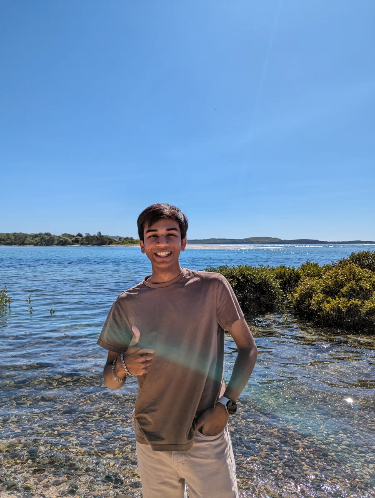
ARYAN RAI / SYDNEY03 / THE PERSON
Hardware person.
Software person.
Curious person.
Mechatronic engineering student at the University of Sydney, working at the intersection of electronics, embedded software and robotics.
I enjoy the whole system: designing a board, writing the firmware, making sense of a sensor, and building an interface that makes the result useful.
Sense & move
ROS 2, SLAM, OpenCV, motion planning, teleoperation, robot learning
Build & connect
STM32, Teensy, Jetson, CAN, MAVLink, KiCad, SolidWorks
Code & simulate
C/C++, Python, TypeScript, Isaac Sim, MuJoCo, Gazebo, Linux
Have something
in mind?
Robotics, embedded systems, interesting ideas. I'd love to hear what you're building.